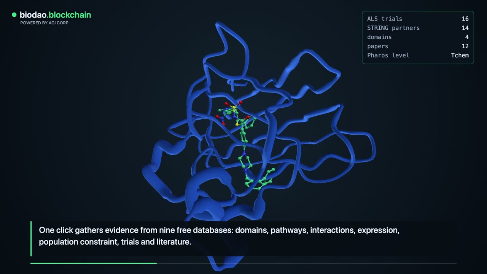
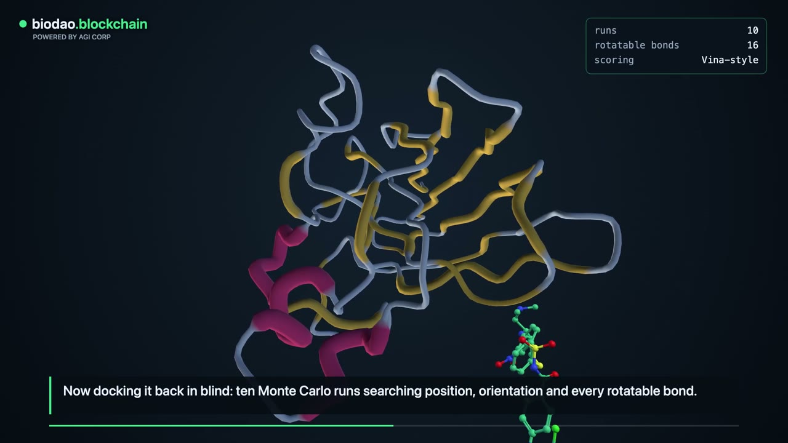
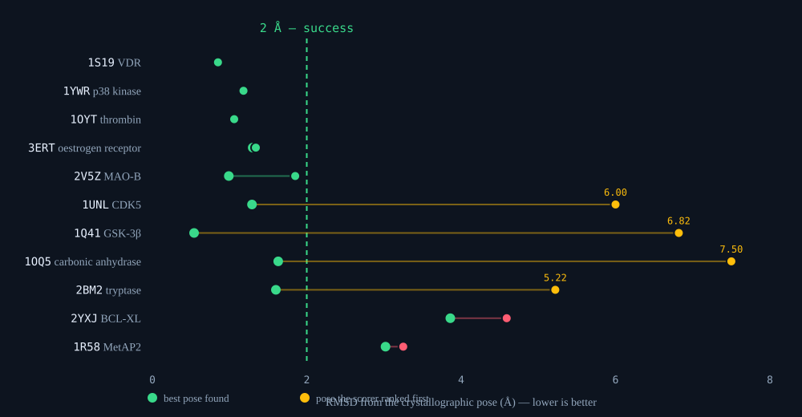
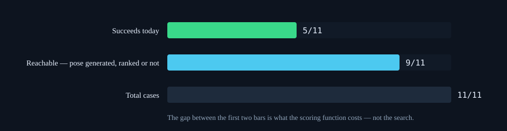
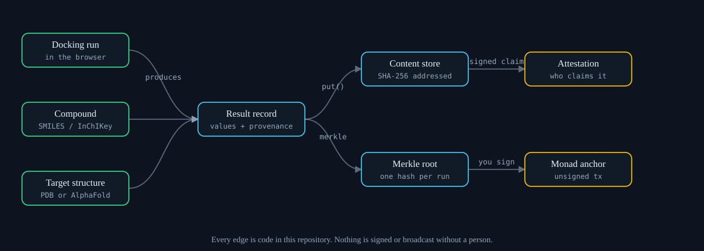
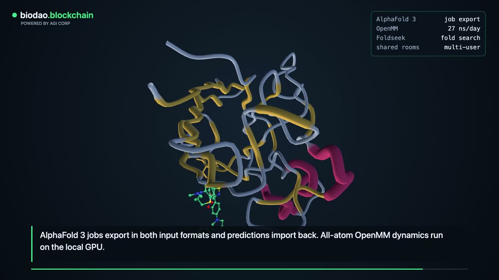

A drug-discovery workspace that runs in a browser or a headset, built on one rule: every number it shows is either traceable to the thing that produced it, or marked in the output itself as a placeholder. Nothing in between.
The walkthrough below is produced by the software from a live session. Every figure on screen comes from a real run against real public databases — nothing is staged for the film.
docs/walkthrough-share.mp4.Computational drug discovery produces figures that look alike whatever their origin.
A docking score from a validated engine, an estimate from an unvalidated one, and a placeholder a
developer left in a stub all render as -8.4. Downstream — in a grant application, a
board deck, a paper — they are indistinguishable.
The failure is not that tools are wrong. It is that they are silent about how right they are. A score with no provenance cannot be challenged, reproduced, or retracted, and the person relying on it usually cannot tell which kind they are holding.
This project takes the opposite default. A value carries its origin, or it announces that it has none. That constraint shaped every component below, and it is the reason several of them refuse to do things their users might want.


Load by gene, PDB id, UniProt accession or disease. Experimental structures come from the RCSB PDB, predicted ones from AlphaFold, and per-residue confidence is displayed rather than averaged away — a 70 pLDDT loop and a 95 pLDDT core are not the same evidence.
A Vina-style scoring function runs in the browser, with a Python implementation checked term by term against it so the two cannot silently diverge. The weights are Vina's published values. What is unusual is not the function but that the repository measures it, publishes the number, and the number is not flattering.
Several people in one molecule, on a laptop or in a headset. The server arbitrates who holds an object — two clients cannot settle a grab between themselves, because at 12 Hz each believes it was first. Holds are leases, so a crashed tab releases rather than blocking the room forever.
Eleven crystal ligands are pulled out of their structures and docked back blind. Five land within 2 Å. That is the honest headline, and it is worse than the four-case set this replaced, which scored three of four.

Widening the set is what produced the drop. With four cases each result was worth 25 points, and the four happened to suit a shape-and-hydrophobicity score. Eleven cases span kinase, protease, nuclear-receptor, metalloenzyme and protein–protein-interface sites, and the score fell to 45%.
A success rate says a case failed. It does not say whether the search never found the pose or the scoring function found it and ranked it below something wrong — and those call for opposite work. The benchmark now separates them.
| Case | Ranked | Best found | Failure mode |
|---|---|---|---|
| 1UNL · CDK5 | 6.00 Å | 1.29 Å | scoring |
| 1Q41 · GSK-3β | 6.82 Å | 0.54 Å | scoring |
| 1OQ5 · carbonic anhydrase | 7.50 Å | 1.63 Å | scoring |
| 2BM2 · tryptase | 5.22 Å | 1.60 Å | scoring |
| 2YXJ · BCL-XL | 4.59 Å | 3.86 Å | sampling |
| 1R58 · MetAP2 | 3.25 Å | 3.02 Å | sampling |

Four of six failures are poses the search located and the scorer mis-ranked. Perfect ranking over poses already being generated would take the benchmark from 45% to 82% with no change to the search at all. That is where the next work belongs, and it is a measurement rather than an intuition.
Single runs are draws. The same case scored 1.44 Å and 7.50 Å on consecutive runs of identical code, and three runs of the unmodified benchmark gave 3/11, 5/11 and 6/11. An A/B of a scoring change over three runs per arm came back inconclusive for exactly that reason. Runs are now seedable so both arms see identical random draws — without that, noise reads as a result.

Where no model has run, a value is a marked number, not a number. The marker survives arithmetic,
formatting, JSON, storage and export, because it is carried by the type rather than by a convention
someone has to remember. Finding this was instructive: the helper written to preserve it through
JSON did not work — default= is never consulted for a float
subclass, so every JSON path in the repository had been silently stripping the marker, including
content-addressed storage.
Even a count is covered. Screening of 5 compounds identified 2 [SYNTHETIC] compounds with favorable binding — a tally derived from placeholders is re-marked, because a bare integer is the most quotable number in any document.
A Merkle root can be anchored on Monad for a timestamp a third party can check. The anchor refuses a record containing placeholders: permanence reads as authority, and "verified on-chain" attached to a stub is a claim that cannot be withdrawn. No key is ever held — the software builds an unsigned transaction and a person signs it.
Disease panels ship with verbatim quotes and identifiers, and two scripts re-ask the sources whether each record still exists and still says what is claimed. The registry check covers 126 assertions across 46 trial records. A claim that cannot be checked is reported as a failure, not a skip.
1,265
tests, one command
126/126
trial claims verified live
14
public sources, no API keys
1
host contacted on page load
Every outbound host is declared with what it is for and what is sent to it, and the build fails on one that is not. Running it the first time found 26 undeclared hosts; most turned out to be a directory that describes databases and never calls them, which is now a separate category — a reviewer who checks one entry and finds it never contacted stops believing the whole table.
The one host contacted on load is a CDN serving the 3D engine. That is the genuine weak point in "runs locally", and the inventory says so rather than listing it flatly.

Most of the harm a tool like this can do is by sounding more certain than it is.
Everything above is reproducible from the repository with a single command. We would rather you checked than took our word for it.
Scan, or clone it:
github.com/AGIFutureFoundation/AGI-Biotech-tool
Collaboration, review and correction all welcome at x@agifuturefoundation.org.